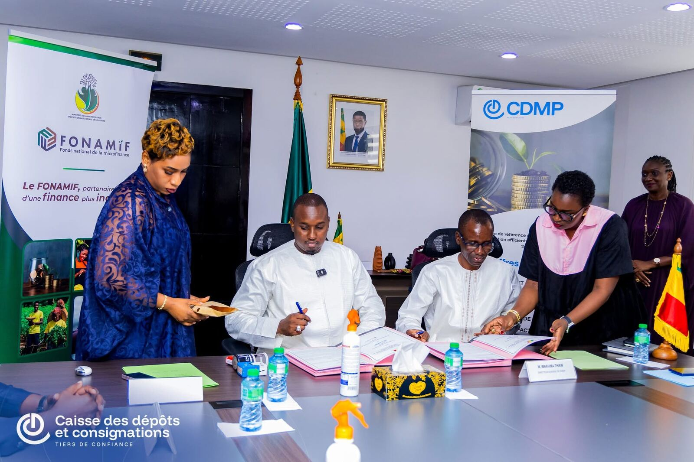
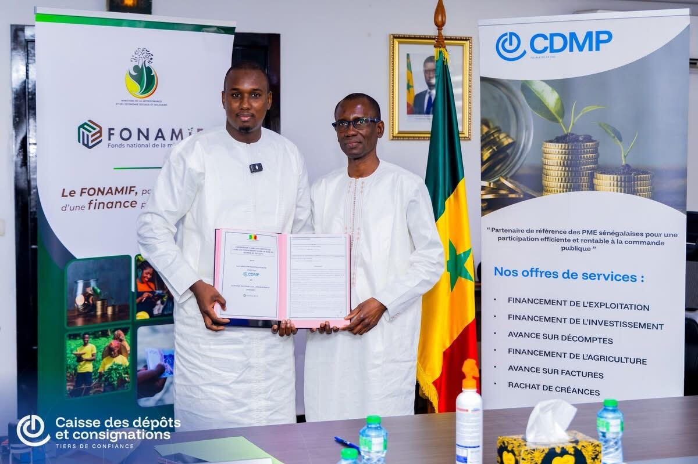

Convention · 7 août 2026
Convention CDMP SA & FONAMIF
Le 7 août 2026, la CDMP (filiale de la CDC Sénégal) et le FONAMIF ont signé une convention-cadre instituant une ligne de refinancement de 2 milliards de FCFA pour les IMF. Adossée au PACTIFU et à la Vision Sénégal 2050, elle doit renforcer le financement des entrepreneurs, PME, femmes, jeunes, coopératives et acteurs de l’ESS, afin de promouvoir l’inclusion financière.